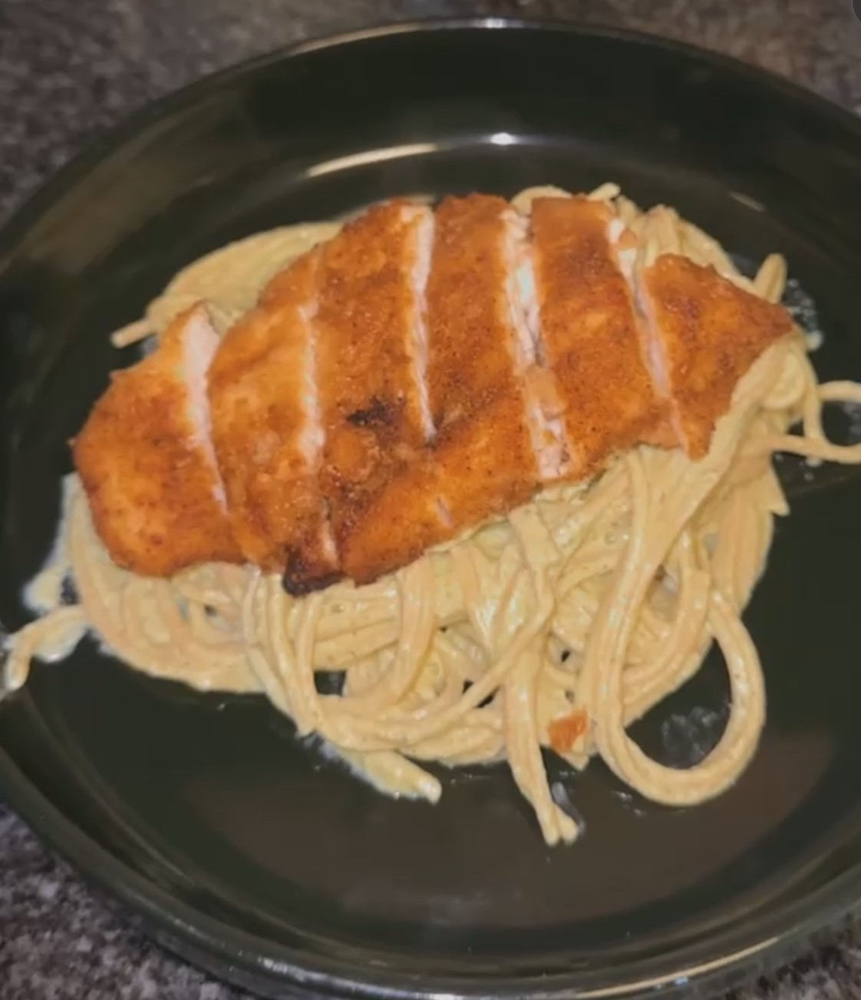

Poblano Cream Pasta
Ingredients
- 2-3 Chile Poblanos (roasted)
- 1 Cup Cream Cheese
- 1/2 Cup Sour Cream
- Chicken Bouillon
- Salt
- Cilantro
- 1/4 of an Onion
- Garlic
- 1/2 Cup Milk
- Pasta (your choice fettucine, spaghetti, etc.)
Instructions
- Roast the poblan pepper. Remove from heat and place them in a bad to sweat for 10 minutes.
- Peel the peppers, remove the seeds, and chop them into small pieces.
- Add the peppers to a blender along with:
- 1 cup of cream cheese
- 1/2 cup of sour cream
- Chicken bouillon
- Salt
- Cilantro
- 1/4 of an onion
- Garlic
- 1/2 cup of milk
- Blend until smooth.
- Cook your pasta according to package instructions.
- Heat the poblano cream sauce in a pan. Add the cooked noodles to the sauce and mix well.
- Serve warm and enjoy!(Pictured below with chicken)
